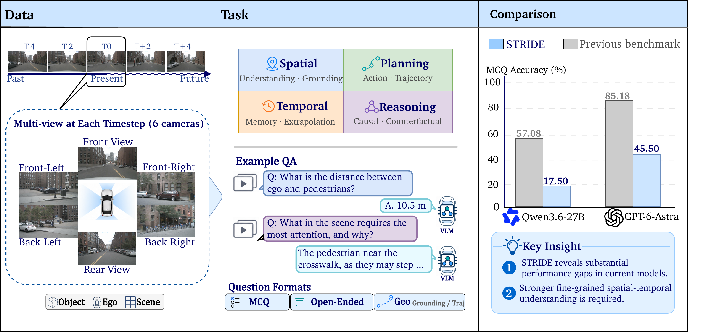
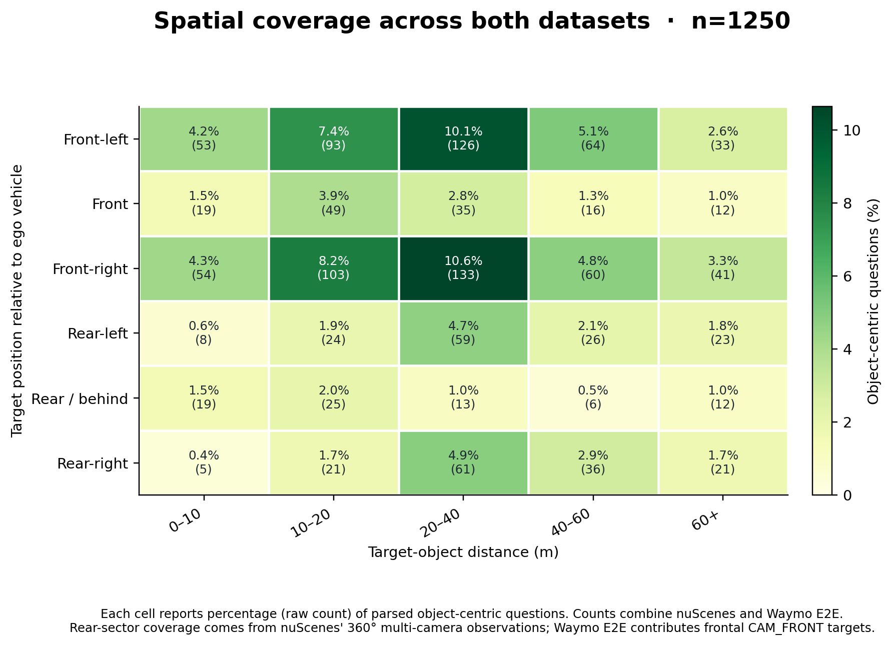
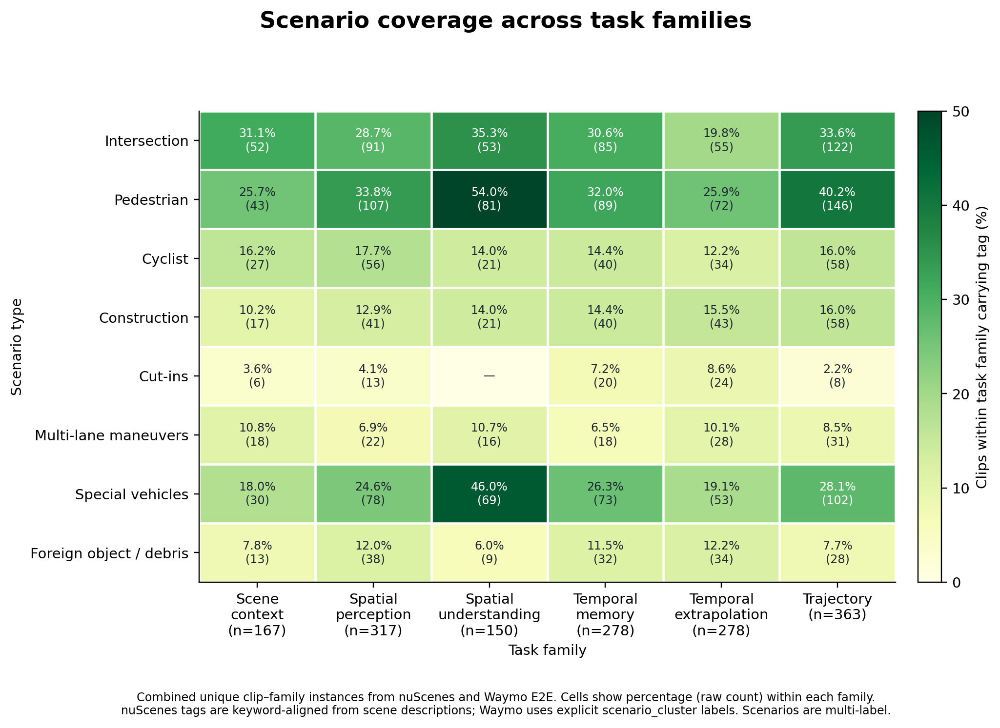

Figure 1. Overview of STRIDE. Five-frame driving context, six task families, and a sharp drop versus prior driving VQA suites (GPT-6-Astra: 85.2% → 45.5% MCQ on nuScenes).
Introduction
Vision-language models look strong on existing driving VQA benchmarks, but those suites often test static recognition rather than the spatiotemporal reasoning needed in edge cases. STRIDE asks whether a model can track objects over time, judge driving significance, and plan ego motion from multi-frame observations.
The benchmark contains 2,350 questions over nuScenes (1,150) and WOD-E2E (1,200), spanning 39 templates in six families: spatial perception, spatial understanding, temporal memory, temporal extrapolation, trajectory prediction, and scene-context awareness. Formats include MCQ, open-ended questions (OEQ), and geometric waypoint regression. The strongest model we evaluated, GPT-6-Astra, reaches only 45.5% MCQ on nuScenes and 41.2% on Waymo — well above random chance (~20%), but far from prior driving VQA numbers.
Leaderboard
Primary ranking key: MCQ accuracy. Open-ended (OEQ) and trajectory (ADE / mini-FDE) metrics are reported separately. Missing entries are shown as —.
| # | Model | Type | MCQ ↑ | OEQ ↑ | ADE ↓ | mini-FDE ↓ |
|---|---|---|---|---|---|---|
| 1 🥇 | gpt-6-astra | proprietary | 45.5 | 6.41 | 0.60 | 0.98 |
| 2 🥈 | GPT-5.5 | proprietary | 39.3 | 6.68 | 0.65 | 0.97 |
| 3 🥉 | gemini-3.6-flash | proprietary | 38.9 | 6.50 | 0.69 | 1.01 |
| 4 | gpt-5.6-sol | proprietary | 38.5 | 5.65 | 0.69 | 0.99 |
| 5 | gemini-3.1-pro-preview | proprietary | 37.8 | 4.53 | 1.42 | 1.84 |
| 6 | Qwen3.6 35B-A3B | VLM | 31.6 | 5.32 | 7.42 | 5.45 |
| 7 | claude-sonnet-5 | proprietary | 29.4 | 6.42 | 0.87 | 1.30 |
| 8 | Qwen2.5-VL 3B | VLM | 27.4 | 3.62 | — | — |
| 9 | Qwen3-VL 30B-A3B-Thinking | VLM | 26.8 | 5.45 | 7.12 | 3.42 |
| 10 | Qwen3-VL 8B-Thinking | VLM | 23.4 | 5.50 | 8.00 | 3.80 |
| 11 | Dolphins | expert | 18.5 | 3.24 | 8.16 | 3.81 |
| 12 | Qwen3.6 27B | VLM | 17.5 | 5.99 | 5.81 | 4.06 |
| — | UniAD 2.0 | expert (TRJ-5) | — | — | 0.56 | 0.79 |
| * | Random chance | — | 19.8 | — | — | — |
| # | Model | Type | MCQ ↑ | OEQ ↑ | ADE ↓ | mini-FDE ↓ |
|---|---|---|---|---|---|---|
| 1 🥇 | gpt-6-astra | proprietary | 41.2 | 6.77 | 13.64 | 12.03 |
| 2 🥈 | gemini-3.1-pro-preview | proprietary | 39.7 | 4.03 | 14.22 | 14.21 |
| 3 🥉 | claude-sonnet-5 | proprietary | 39.2 | 7.01 | 13.16 | 10.27 |
| 4 | gemini-3.6-flash | proprietary | 38.8 | 6.20 | 13.53 | 11.37 |
| 5 | GPT-5.5 | proprietary | 38.7 | 7.00 | 13.84 | 12.57 |
| 6 | gpt-5.6-sol | proprietary | 37.7 | 6.48 | 13.81 | 12.39 |
| 7 | Qwen2.5-VL 3B | VLM | 37.4 | 2.57 | — | — |
| 8 | Qwen3.6 35B-A3B | VLM | 34.3 | 5.83 | 18.55 | 8.86 |
| 9 | Qwen3-VL 8B-Thinking | VLM | 32.0 | 4.72 | 22.36 | 19.37 |
| 10 | Qwen3-VL 30B-A3B-Thinking | VLM | 31.8 | 4.98 | 11.83 | 6.18 |
| 11 | Qwen3-VL 8B-Instruct | VLM | 30.1 | 4.96 | 19.64 | 12.65 |
| 12 | Qwen3.6 27B | VLM | 28.4 | 5.87 | 20.37 | 19.25 |
| 13 | Dolphins | expert | 22.2 | 1.86 | 18.43 | 8.60 |
| * | Random chance | — | 20.3 | — | — | — |
OEQ is a 0–10 vision-judge score on open-ended answers. Trajectory errors are in meters (nuScenes vs Waymo scales differ).
Machine-readable tables live in the repo.
To submit a result, open an issue or PR with your *_score_report.json.
Benchmark
Each question uses a five-frame temporal window. nuScenes inputs are 2×3 surrounding-camera grids; Waymo uses CAM_FRONT. When a target object exists, it is marked with a red box on the query frame. Annotations ship in this repository and on Hugging Face; raw images are downloaded from nuScenes and Waymo Open Dataset.
Spatial perception · SP
Observable object properties: relative position, distance, motion direction, lane occupancy.
Spatial understanding · SU
Driving significance of spatial relations: drivable area, lane change, ego constraint, risk.
Temporal memory · TM
How the current state formed: prior visibility, occlusion, reappearance, recent motion.
Temporal extrapolation · TE
Likely evolution: future motion, occupancy, collision timing, subsequent events.
Trajectory prediction · TRJ
Ego past/future motion via ranking, language justifications, and waypoint regression.
Scene-context awareness · SC
Environment, road structure, and surrounding activity that frame individual objects.
Setup and evaluation instructions: github.com/PlusLabNLP/STRIDE.
Statistics
STRIDE covers challenging driving situations (pedestrians, intersections, construction, debris) across both source datasets, with object-centric questions spanning distance and bearing relative to the ego vehicle.

Figure 2. Dataset coverage: (a) scenario tags on nuScenes vs Waymo, (b) task-family mix, (c) future ego speed change by maneuver.

Figure 3. Spatial coverage of object-centric questions (bearing × distance).

Figure 4. Scenario coverage across the six task families (multi-label clips).
Citation
@misc{liu2026stride,
title = {{STRIDE}: Evaluating Spatiotemporal Reasoning in Driving Edge Cases},
author = {Liu, Lieqi and Gao, Rui and Gu, Jia-Chen and Hu, Wenbo and Mo, Zhaobin
and Moradipari, Ahmadreza and Ammar, Nejib and Wang, Wei and Peng, Nanyun},
year = {2026},
note = {Preprint},
howpublished = {\url{https://github.com/PlusLabNLP/STRIDE}}
}